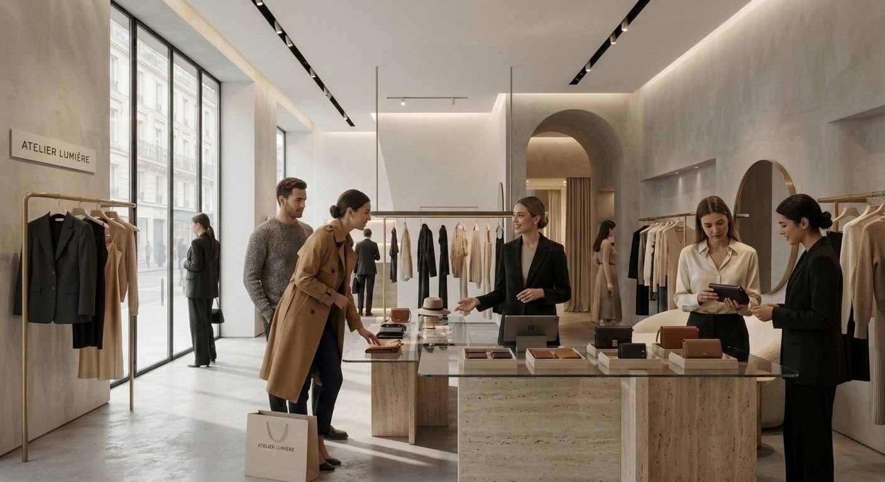

Desde el momento en que observa la fachada, cruza la entrada y recorre el espacio, su cerebro procesa estímulos que influyen en su percepción, permanencia y decisión de compra. En este contexto, la arquitectura comercial deja de ser una cuestión estética para convertirse en una herramienta estratégica de negocio.
Hoy, las empresas más exitosas entienden que el espacio físico es uno de sus principales activos. Una tienda, restaurante, clínica o showroom bien diseñado no solo refleja la identidad de la marca; también optimiza la operación, mejora la experiencia del cliente y favorece el desempeño comercial.
¿Qué es la arquitectura comercial?
La arquitectura comercial es la disciplina encargada de diseñar espacios destinados a actividades comerciales, considerando tanto aspectos funcionales como estratégicos.
Su objetivo no es únicamente crear espacios atractivos, sino desarrollar entornos que respondan a las necesidades del negocio, del cliente y de la operación diaria.
A diferencia de otros tipos de arquitectura, la arquitectura comercial integra elementos como:
- Identidad de marca.
- Comportamiento del consumidor.
- Experiencia de compra.
- Flujo y circulación.
- Exhibición estratégica de productos.
- Operación del negocio.
- Rentabilidad del espacio.
En otras palabras, cada decisión de diseño responde a un objetivo comercial.
La arquitectura comercial como herramienta de negocio
Durante años, muchas empresas consideraron el diseño de sus espacios como un gasto asociado a la imagen.
Hoy esa visión ha cambiado.
La evolución del retail, el crecimiento del comercio electrónico y las nuevas expectativas de los consumidores han convertido a las tiendas físicas en espacios de experiencia, interacción y construcción de marca.
Organizaciones como el Retail Design Institute y la National Retail Federation coinciden en que el diseño de los espacios comerciales influye directamente en la percepción del consumidor, la permanencia en tienda y la experiencia de compra.
Por ello, la arquitectura comercial ya no busca únicamente albergar productos; busca crear entornos que faciliten la conexión entre las personas y las marcas.
